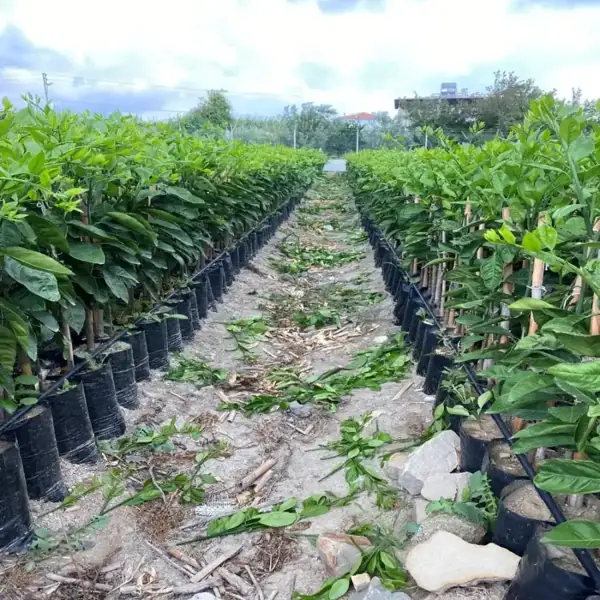
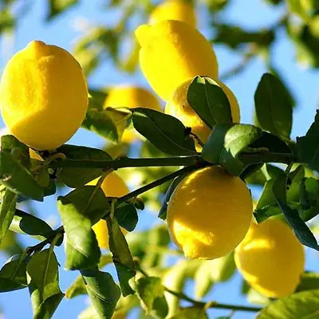
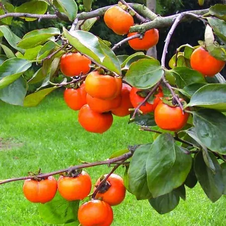
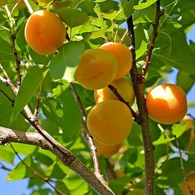
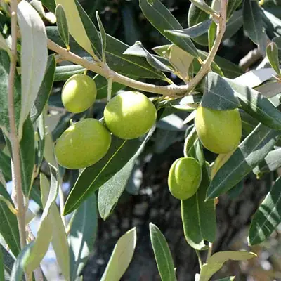

Fidanlarınızı aldığınızda
Fidanlarınızı teslim aldığınızda hafifçe sulayın. Hemen dikmeyecekseniz 3–4 günde bir, suya boğmadan sulamayı ihmal etmeyin.
Fidanınız elinize ulaştığı andan ilk hasada kadar bilmeniz gerekenler. Aklınıza takılan her konuda bizi arayabilirsiniz.

FidanlığımızdanSamandağ / HatayFidanlarınızı teslim aldığınızda hafifçe sulayın. Hemen dikmeyecekseniz 3–4 günde bir, suya boğmadan sulamayı ihmal etmeyin.
Dikimi buharlaşmanın en az olduğu saatlerde, sabah erken ya da ikindi vakti yapın.
Fidanlar arasında 4, 5 ya da 6 metre bırakın.
Turunçgillerde 40–45 cm genişliğinde ve 30–40 cm derinliğinde; zeytin ve Trabzon hurmasında 30–40 cm genişliğinde ve 35–40 cm derinliğinde; kayısıda 60 × 60 cm çukur açın.
Çukurun dibine leonarditle iyice karıştırılmış toprak koyun. Çıkan toprağa hayvansal gübre katmayın: dip kurdu ve yabancı ot tohumu taşıyabilir.
Fidanı çukura dik koyun, poşetini ya da saksısını toprağı dağıtmadan çıkarın ve poşet hizasına kadar toprakla doldurun.
Aşı noktası toprağın 5–10 cm üstünde kalmalı. Toprak altında kalırsa fidanın gelişmesi durur ve fidan kuruyabilir.
Fidan başına yaklaşık 10 litre can suyu verin. Dik büyümesi için köküne zarar vermeden bir destek çubuğuna bağlayın.
Sulama sıklığı toprağa, havaya ve fidanın yaşına göre değişir; aşağıdakiler başlangıç için yol gösterir.




Turunçgiller, zeytin, Trabzon hurması ve yenidünya saksıda da yetiştirilebilir. Saksıdaki fidanı 4–5 günde bir, suya boğmadan sulayın.
Fidanlarımızı Samandağ'daki fidanlığımızda yerinde görebilirsiniz. Gelmeden önce arayıp haber vermeniz yeterli.
TesislerimizDikim, sulama ya da çeşit seçimiyle ilgili her konuda bizi arayın; size yardımcı olalım.